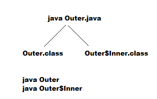

Normal or Regular Inner classes :
- If we are declaring any named class directly inside a class without static modifier such type of inner class is called Normal or Regular Inner class .

- Inside inner class we can not declare static members . Hence we can not declare main(-) method and we can not invoke inner classes directly from command prompt .
- If we are trying to declare static members inside inner classes then we will get compile time error .
- From Normal or Regular inner class, we can access both static and non-static members of Outer class
- Within the inner class 'this' always refers current inner class object . But to refer current Outer class object we have to use Outer_class_name.this
- The only applicable modifier for top level classes (Outer classes) are public, , final, abstract and strictfp .
- But for Inner classes applicable modifiers are
- public,,final,abstract,strictfp,private,protected,static
Nesting of Inner classes :
- We can declare Inner class inside Inner class i.e nesting of Inner classes is possible .